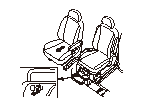
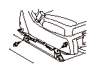
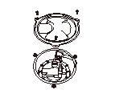
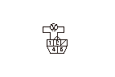
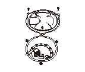
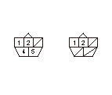
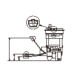
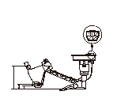

フューエル メータ/フューエル センダ ユニット/フューエル サブ ユニットの点検
火気厳禁のこと。
点検を行う前に
コンビネーション メータの自己診断
を行い、フューエル メータの作動を確認する。
ヒューズ ボックス内No.22メータ（7.5A）ヒューズを点検する。
•
正常な場合は、ヒューズ ボックス内No.22メータ（7.5A）ヒューズとコンビネーション メータ間コードの断線を確認する。
•
異常がある場合は、ヒューズ ボックス内No.22メータ（7.5A）ヒューズとコンビネーション メータ間コードの短絡および各部品の内部短絡を点検する。
HDSをデータ リンク カプラに接続し、ボディ エレクトリカルからテスト モード メニューを選択し、
DTCを確認
する。
•
DTCが表示されていない場合は、
3
.の点検へ進む。
•
DTC B1175
または
B1176
が表示された場合は、表示された故障診断を行う。
バッテリのマイナス端子の接続を外し、再接続する。（またはL. サイド リフト アップ シート左下にあるコントロール ユニットのカプラの接続を外し、再接続する。）
再接続時、ブザーが鳴る。
L. サイド リフト アップ シートのエマージェンシ スイッチ ラベル(A)をめくり、スイッチ操作でシートを後方に約70 mmスライドさせる。
スイッチ操作でシートが後方リミット位置（約 76 mm）まで達した場合は、シートが初期格納位置まで自動で戻ってしまうので、ステップ
3
からやり直すこと。
右側セカンド シート(B)を、前方いっぱいまでスライドさせる。
バッテリのマイナス端子の接続を外す。

リフタ ベース カバーとリフタ ブラケットを固定しているクリップ(A)を3個外す。
シート左側より、リフタとフロアの締め付けボルト2本を外す。
シート右側より、リフタとリフタ ブラケットの締め付けボルト2本を外す。

シート左下にあるコントロール ユニットから各カプラ(A)の接続を外す。
シート右下のツメ(A)が、リフタ ブラケット(B)に突き当たるまで、リフタを前方にスライドさせる。
シート右下のツメが、リフタ ブラケットに突き当たるのを確認すること。
シートを、シート右下のツメを支点にしてゆっくり右側セカンド シート側に倒し、右側セカンド シートで抑える。
左側メンテナンス リッド（A）、フューエル ポンプ5Pカプラ（B）を取外す。

イグニッション スイッチをON（
II
）にし、フューエル ポンプ5PカプラのNo.1端子とNo.2端子間の電圧を測定する。
•
バッテリ電圧がある場合は、
19
.の点検を行う。
•
電圧がない場合は、イグニッション スイッチをOFFにし、
16
.の点検を行う。
右側セカンド シートを取外す。
L. サイド リフト リフト アップ シートに傷をつけないようにすること。

右側メンテナンス リッド（A）、フューエル サブ ユニット5Pカプラ（B）を取外す。

フューエル ポンプ5PカプラのNo.1端子とフューエル サブ ユニット5PカプラのNo.2端子間の導通を確認する。
•
導通がある場合は、フューエル サブ ユニットとコンビネーション メータ間の若葉コード、フューエル ポンプとコンビネーション メータ間の橙コードの断線を確認する。
•
導通がない場合は、フューエル サブ ユニットとフューエル ポンプ間の赤コードの断線を確認する。
イグニッション スイッチをOFFにする。
フューエル ポンプをフューエル タンクから取外す。
センダ ユニットのフロート アームを曲げないように注意すること。
フューエル サブ ユニットをフューエル タンクから取外す。
センダ ユニットのフロート アームを曲げないように注意すること。

フューエル ポンプ5PカプラのNo.1端子とNo.2端子間の抵抗値がフロートを上下させることでスムーズに変化することを確認したあと、以下のフロート位置において抵抗値を測定する。
•
異常がある場合は、フューエル センダ ユニットを交換する。
•
異常がない場合は、
23
.の点検を行う。
フロート位置
F
警告灯
E
抵抗値（Ω）
9-11
308.6-361.8
374.4-382.2

フューエル サブ ユニット5PカプラのNo.1端子とNo.2端子間の抵抗値がフロートを上下させることでスムーズに変化することを確認したあと、以下のフロート位置において抵抗値を測定する。
•
異常がある場合は、フューエル サブ ユニットを交換する。
•
異常がない場合は、
24
.の点検を行う。
フロート位置
F
メータのF点
E
抵抗値（Ω）
9-11
243.2-250.2
376.6-405.8
フューエル ポンプ、フューエル サブ ユニット5Pカプラを接続する。
フロートを‘‘F’’の位置に保持し、イグニッション スイッチをON（
II
）にする。
フューエル メータ損傷防止のため、長時間フロートを‘‘F’’の位置に保持しないこと。
フューエル メータの指針が‘‘F’’の位置を示すことを確認する。
•
‘‘F’’の位置を示さない場合は、コンビネーション メータを交換する。
•
‘‘F’’の位置を示す場合は、フューエル メータおよびフューエル センダ ユニット、フューエル サブ ユニットは正常である。
取付けは、取外しの逆の手順で行う。
バッテリのマイナス端子を接続する。
シートの初期位置学習を行う。
•
スイッチ操作でシートを後方リミット位置までスライドさせることにより、シートが自動で初期格納位置まで戻る。


 点検を行う前に
点検を行う前に

 スイッチ操作でシートが後方リミット位置（約 76 mm）まで達した場合は、シートが初期格納位置まで自動で戻ってしまうので、ステップ
スイッチ操作でシートが後方リミット位置（約 76 mm）まで達した場合は、シートが初期格納位置まで自動で戻ってしまうので、ステップ